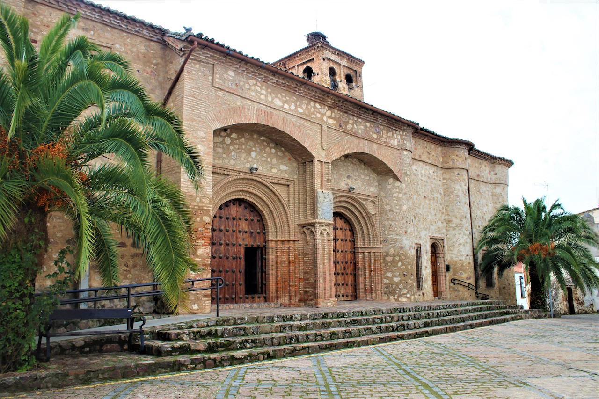
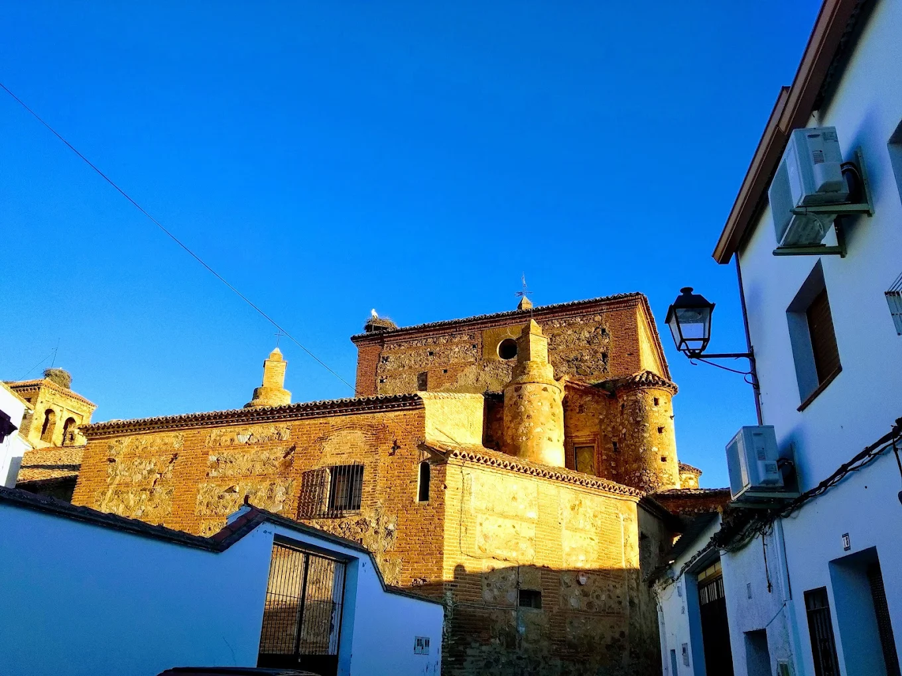
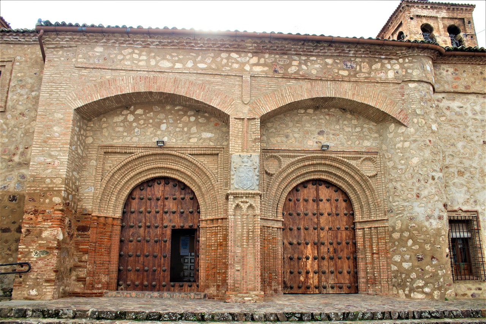
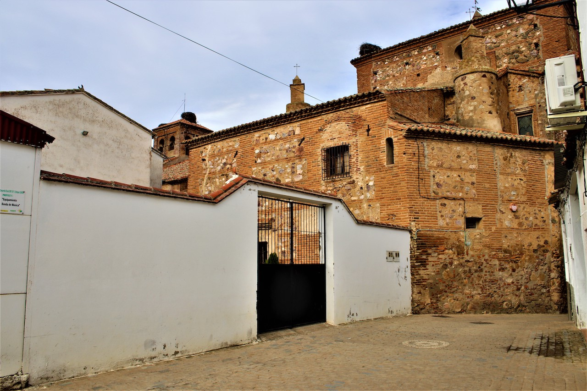
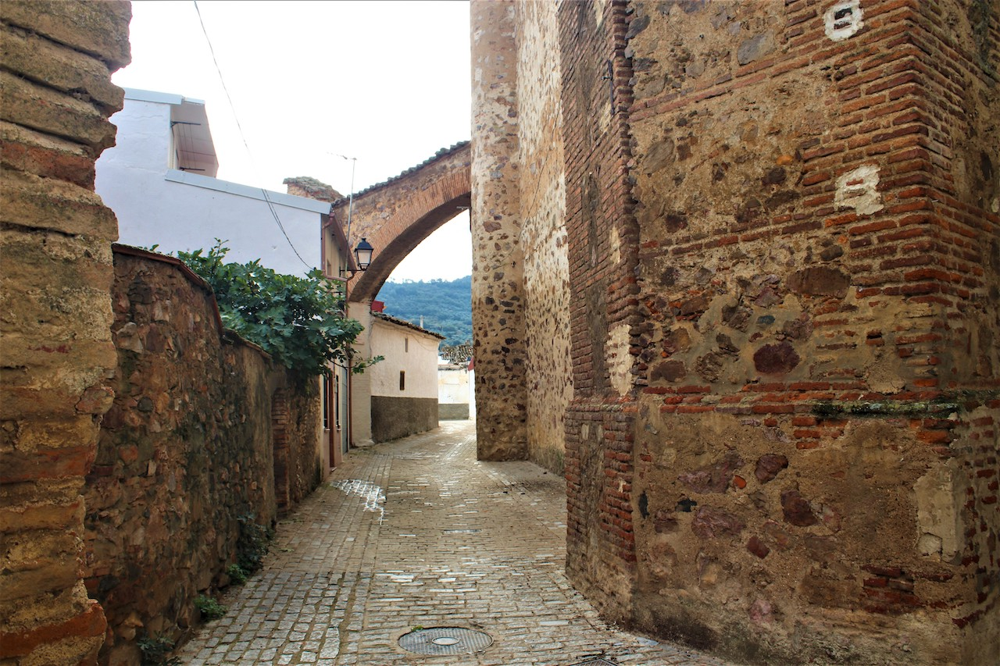
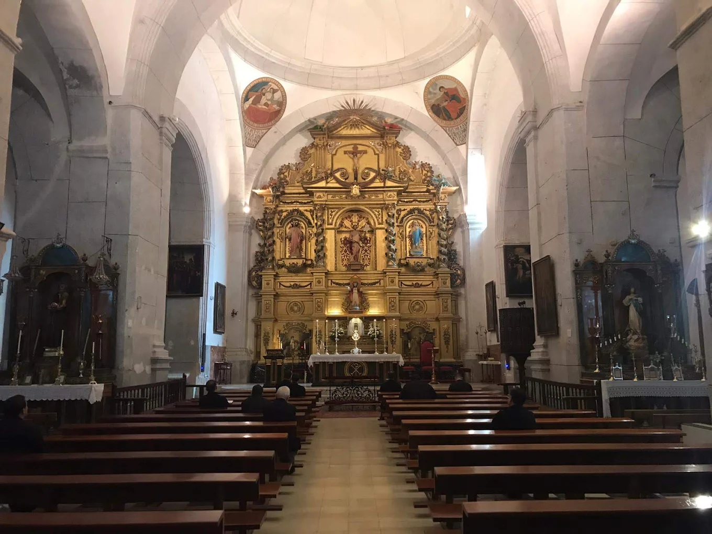

Iglesia Parroquial San Juan Bautista
Un templo majestuoso que combina estilos gótico y renacentista.
La iglesia que hoy admiramos es una sólida construcción de proporciones catedralicias, con tres naves abovedadas sostenidas por amplias pilastras. Sus orígenes se remontan al menos a 1483, aunque múltiples indicios sugieren una existencia aún más antigua. Entre 1494 y 1500 fue ampliada, integrando un estilo que fusiona el mudéjar primitivo con el gótico final, reflejando la evolución artística de la época.
En su exterior, destaca la mampostería reforzada con estribos de ladrillo y piedra, y los arcos arbotantes que sostienen la capilla mayor. La portada norte, de arquería mudéjar con dos grandes puertas góticas, exhibe el escudo toscamente tallado de los Pecos. La torre, ubicada al oeste sobre la casa rectoral, tiene forma de azotea cuadrada con tejado a cuatro aguas y alberga dos campanas.
El interior renacentista está dividido en tres naves, donde doce robustos pilares cuadrados sustentan un espacio de 60 varas de largo por 34 de ancho. La capilla mayor, reconstruida en 1660, está cubierta por una cúpula decorada con medallones que representan a los Evangelistas y una inscripción histórica que recuerda su construcción.
Entre los tesoros artísticos, sobresale el retablo plateresco original de Gregorio Prado, parcialmente perdido durante la Guerra Civil, y un nuevo retablo barroco inaugurado en 1956, tallado en madera dorada con representaciones de escenas bíblicas y símbolos religiosos. El sagrario, obra de Mariano Molagón y colocado en 1944, es una pieza de metal dorado con esmaltes y destaca además la custodia de plata del siglo XVI, utilizada en importantes ceremonias litúrgicas.
Esta iglesia no solo es un testimonio arquitectónico, sino también un legado espiritual y cultural invaluable para nuestra comunidad.
Galería de fotos






